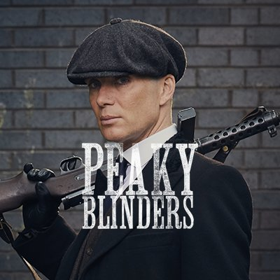
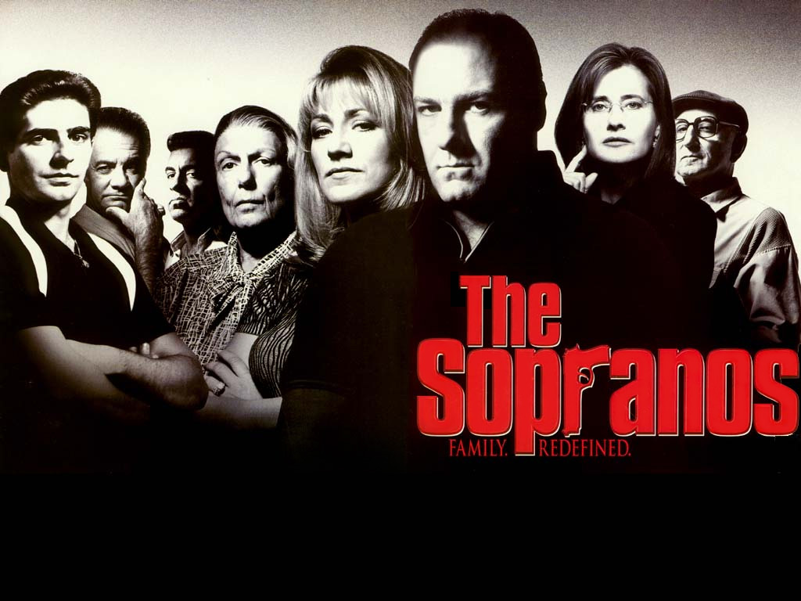
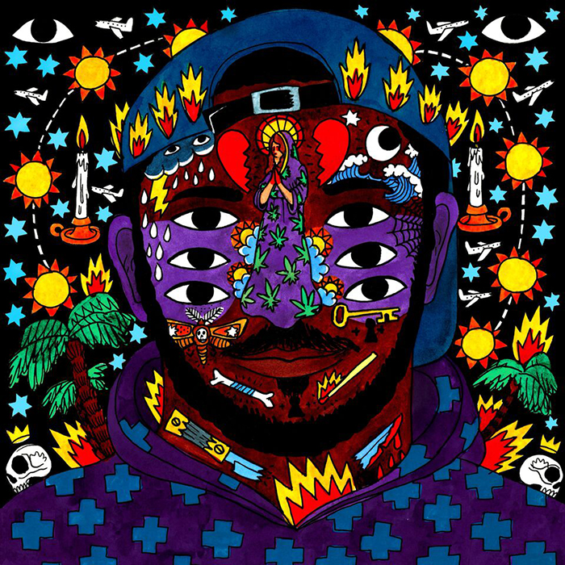

Ben Baumann
Upcoming web developer - watch this space
I'm an Economics & Management graduate from the University of Bristol with working experience in global retail within consumer electronics. Moving ahead I want to pursue my passion for digital marketing and web development.
My favourite things
Best of TV
|  |
Peaky blindersBritain is a mixture of despair and hedonism in 1919 in the aftermath of the Great War. Returning soldiers, newly minted revolutions and criminal gangs are fighting for survival in a nation rocked by economic upheaval. One of the most powerful gangs of the time is the Peaky Blinders, run by returning war hero Thomas Shelby and his family. |
 |
The SopranosTony Soprano juggles the problems of his fractious family with those of a "Family" of a different sort - the mob. He sees a therapist to deal with his professional and personal problems, which bring on panic attacks. He deals with personal and professional power struggles, affairs, violence, the threat of exposure and betrayal, and a whole bunch of people being whacked. |
Best of Music
|  |
KaytranadaLouis Kevin Celestin, known by his stage name Kaytranada, is a Haitian-Canadian DJ and record producer. Celestin began his career under the alias Kaytradamus in 2010. He is part of the hip hop duo The Celestics |
GiggsNathaniel Thomson, better known by his stage name Giggs, is an English rapper from London. He released his debut studio album Walk in da Park in 2008 and released a follow-up album Let Em Ave It the following year. |